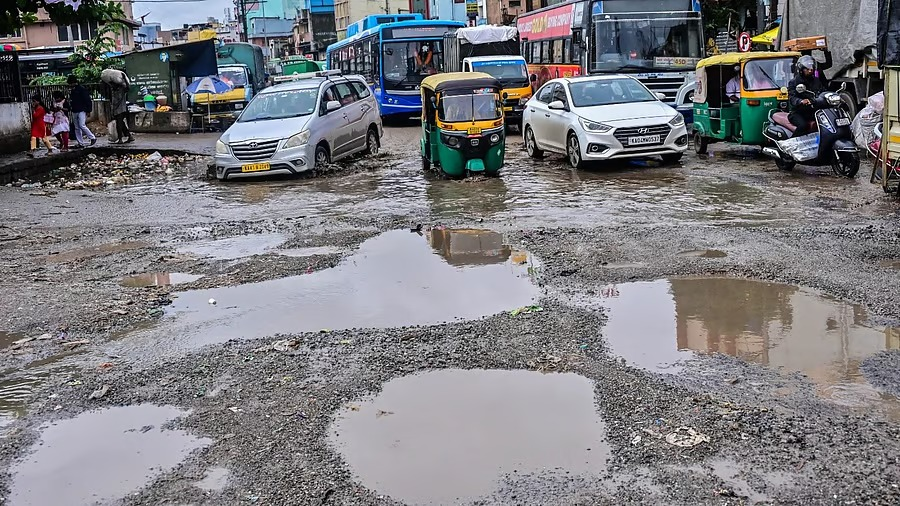
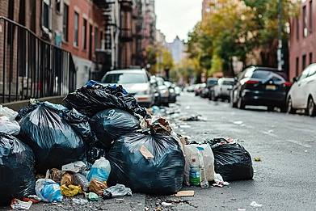
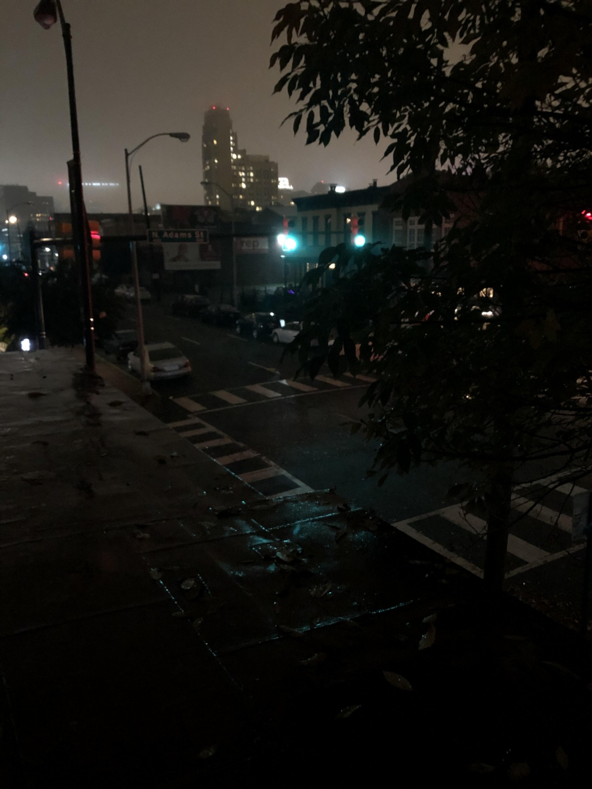

CivicGram
📍 Map View
📊 Yearly Stats
🕓 History

@ArjunK
📍 5th Street, Zone 3 • 2h ago
👍 12
💬 4
🔁 Share
Massive pothole causing traffic delays. Needs urgent repair.
⏳ Status: In Progress

@NehaR
📍 Sector 8, Park Lane • 1d ago
👍 34
💬 7
🔁 Share
Overflowing garbage bin not cleared for 3 days.
✅ Resolved • Satisfaction:
⭐⭐⭐⭐☆

@Shivam
📍 Sector 4 Circle • 3h ago
👍 8
💬 2
🔁 Share
Streetlights not working — very unsafe after dark.
🟡 Status: Pending
➕ Report Issue